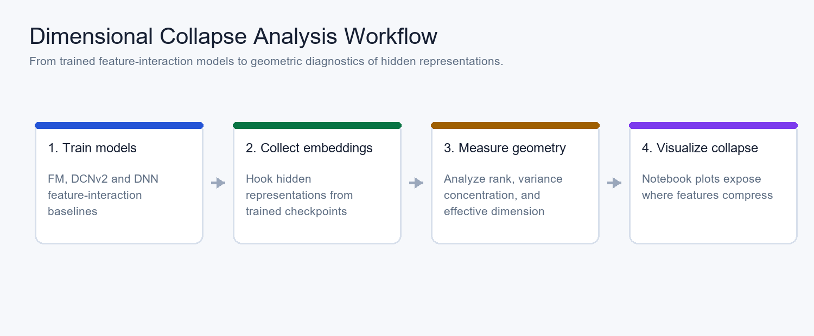

Official code for "Understanding DNNs in Feature Interaction Models: A Dimensional Collapse Perspective".
This repository analyzes how DNN components affect representation geometry in feature interaction models. It is implemented on top of FuxiCTR and reuses experiment conventions from GE4Rec.
1. Paper
Jiancheng Wang, Mingjia Yin, Hao Wang, and Enhong Chen. Understanding DNNs in Feature Interaction Models: A Dimensional Collapse Perspective. SIGIR 2026 Short Paper, 2026.
Paper / PDF / Project Page / Code / Citation
The paper studies a long-running question in feature interaction models: whether DNNs mainly learn high-order interactions or instead improve the dimensional robustness of learned representations. It analyzes dimensional collapse through trained embeddings, component ablations, and gradient-based evidence.
2. Highlights
- Studies DNN roles in feature interaction models from a dimensional collapse perspective.
- Supports analysis over complete DNNs and fine-grained DNN components.
- Provides scripts to prepare data, train models, extract embeddings, and visualize collapse behavior.
- Builds on FuxiCTR and GE4Rec so the analysis remains close to established CTR/recommendation workflows.
3. Method At A Glance

The workflow trains feature interaction models, extracts hidden embeddings, measures geometric collapse, and visualizes the resulting representation patterns in analysis.ipynb.
4. Repository Structure
.
|-- fuxictr/ # FuxiCTR-based training and utility code
|-- model_zoo/ # Feature interaction model configurations and runners
|-- 1.prepare.sh # Data/model preparation
|-- 2.train_model.sh # Model training
|-- 3.analyze.sh # Embedding extraction for collapse analysis
|-- analyze.py # Analysis data generation
|-- analysis.ipynb # Visualization and interpretation notebook
`-- docs/ # Project page and README assets5. Installation
conda create -n FuxiCTR_analysis python=3.10 -y
conda activate FuxiCTR_analysis
pip3 install torch torchvision torchaudio
pip3 install -r requirements.txt6. Data / Models
Prepare the dataset and train the feature interaction models:
bash 1.prepare.sh
bash 2.train_model.sh7. Quick Start
Generate embedding batches for dimensional collapse analysis:
bash 3.analyze.shAfter embeddings are generated, open analysis.ipynb and set embedding_dir to the generated file path.
8. Reproducing Results / Evaluation
The notebook visualizes embedding statistics and collapse patterns after the training and extraction scripts finish. Advanced usage and lower-level code explanations follow the conventions in GE4Rec.
9. Configuration Notes
The model zoo inherits FuxiCTR-style configuration. When adding new models, keep the preparation, training, extraction, and notebook paths aligned so the analysis notebook can reuse the same embedding layout.
10. Experimental Highlights
The paper reports that both parallel and stacked DNN components can mitigate dimensional collapse in embeddings, giving a different explanation for why DNNs help feature interaction models beyond directly learning dot products.
| Backbone | Dataset | Base AUC / RankMe | With DNN | Readout |
|---|---|---|---|---|
| FM | Avazu | 0.7848 / 89.12 | +p-DNN: 0.7927 / 166.78; +s-DNN: 0.7893 / 160.57 | Both DNN placements raise AUC and RankMe. |
| FM | Criteo | 0.8025 / 70.13 | +p-DNN: 0.8137 / 181.56; +s-DNN: 0.8050 / 72.93 | p-DNN increases FM RankMe by about 158%. |
| CrossNet | Avazu | 0.7885 / 105.18 | +p-DNN: 0.7930 / 163.18; +s-DNN: 0.7934 / 170.02 | DNNs flatten the singular-value spectrum. |
| CrossNet | Criteo | 0.8118 / 161.84 | +p-DNN: 0.8134 / 169.41; +s-DNN: 0.8138 / 186.59 | Stacked DNN gives the strongest RankMe in this setting. |
Conclusion: DNN components help feature-interaction models partly by improving embedding dimensional robustness, not only by adding more nonlinear predictors.
11. Notes For Maintainers
- Keep generated embeddings and large data artifacts outside Git history.
- Store future README/project-page visuals under
docs/assets/. - Add proceedings, slides, or video links to the Paper section when official SIGIR materials become public.
12. Citation
@misc{wang2026dimensionalcollapse,
title = {Understanding DNNs in Feature Interaction Models: A Dimensional Collapse Perspective},
author = {Wang, Jiancheng and Yin, Mingjia and Wang, Hao and Chen, Enhong},
year = {2026},
eprint = {2604.26489},
archivePrefix = {arXiv},
primaryClass = {cs.LG},
url = {https://arxiv.org/abs/2604.26489}
}13. Contact
For paper questions, please contact:
- First author: Jiancheng Wang.
- Corresponding authors: Hao Wang (
wanghao3@ustc.edu.cn) and Enhong Chen (cheneh@ustc.edu.cn)
For repository issues, please open a GitHub issue in this repository.